Lógica de procesos
La lógica a la hora de desarrollar los procesos sigue la premisa de encapsular los procesos para poder convertirlos en procesos reutilizables y versátiles. Para ello, los procesos utilizaran marcas de dispositivos genéricas, para de esta forma poder asignárselos a dispositivos reales, bien que sean de controles de Zeus Control o bien de otro estándar diferente.
Los procesos siempre tienen que seguir las mismas reglas y programarse de la misma forma, con esto, se consigue una coherencia entre todos los procesos programados por el área, lo que consigue que cualquier técnico pueda saber donde se encuentran todas las partes de la lógica sin realmente saber de qué trata el proceso.
Partiendo de esta idea, debemos de tener en cuenta la numeración especificada en organización de numeración de bloques. Los procesos siempre se programarán siguiendo el siguiente orden de bloques:
- Principal
- Se numerará el primero, terminando en 0.
- Se nombrará el bloque de función de la siguiente forma en MAYUSCULAS.
- Tipo de bloque + Numero de FC + _ + Maquina + _ + PRINCIPAL
- FC300_UF1_PRINCIPAL
- Se nombrará el bloque de datos de la siguiente forma en MAYUSCULAS.
- Tipo de bloque + Numero de DB + _ + Maquina + _ + PRINCIPAL
- DB300_UF1_PRINCIPAL
- Proceso
- Se numerará el primero, terminando en 1.
- Se nombrará de la siguiente forma en MAYUSCULAS.
- Tipo de bloque + Numero de FC + _ + Maquina + _ + PROCESO
- FC301_UF1_PROCESO
- Se nombrará el bloque de datos de la siguiente forma en MAYUSCULAS.
- Tipo de bloque + Numero de FC + _ + Maquina + _ + AUXILIARES
- DB301_UF1_PROCESO
- Auxiliares
- Se numerará el primero, terminando en 2.
- Se nombrará el bloque de función de la siguiente forma en MAYUSCULAS.
- Tipo de bloque + Numero de FC + _ + Maquina + _ + AUXILIARES
- FC302_UF1_AUXILIARES
- Transiciones
- Se numerará el primero, terminando en 3.
- Se nombrará de la siguiente forma en MAYUSCULAS.
- Tipo de bloque + Numero de FC + _ + Maquina + _ + TRANSICIONES
- FC303_UF1_TRANSICIONES
- Activaciones
- Se numerará el primero, terminando en 4.
- Se nombrará de la siguiente forma en MAYUSCULAS.
- Tipo de bloque + Numero de FC + _ + Maquina + _ + ACTIVACIONES
- FC304_UF1_ ACTIVACIONES
Dada la complejidad de los procesos CIP, será el único proceso que no seguirá esta norma de numeración.
Para poder encapsular el proceso, se utilizarán bloques de datos y funciones específicas de parámetros y de alarmas. Debemos de tener en cuenta la numeración especificada en organización de numeración de bloques.
- FC Parámetros
- Se numerará sumándole al inicio del número de parámetros (3000) el número del proceso (en este ejemplo, 300).
- Para la gestión de parámetros, se utilizará siempre el 0.
- Tipo de bloque + Numero de FC + _ + Maquina + _ + GEST_PARAMETROS
- FC3300_UF1_GEST_PARAMETROS
- Para la visibilidad de parámetros, se utilizará siempre el 1.
- Tipo de bloque + Numero de FC + _ + Maquina + _ + GEST_PARAMETROS
- FC3301_UF1_VIS_PARAMETROS
- Para la gestión de parámetros, se utilizará siempre el 0.
- Para parámetros reales, se utiliza siempre el 0.
- Tipo de bloque + Numero de DB + _ + Maquina + _ + PREAL
- DB3300_UF1_PREAL
- Para parámetros enteros, se utiliza siempre el 1.
- Tipo de bloque + Numero de DB + _ + Maquina + _ + PINT
- DB3301_UF1_PINT
- Se numerará sumándole al inicio del número de parámetros (3000) el número del proceso (en este ejemplo, 300).
- Alarmas
- Se numerará sumándole al inicio del número de alarmas (5000) el número del proceso (en este ejemplo, 300).
- Para la gestión de alarmas, se utilizará siempre el 0.
- Tipo de bloque + Numero de FC + _ + Maquina + _ + GEST_ALARMAS
- FC5300_UF1_GEST_ALARMAS
- Para la gestión de alarmas, se utilizará siempre el 0.
- Para el bloque de datos de alarmas, se utiliza siempre el 0.
- Tipo de bloque + Numero de DB + _ + Maquina + _ + ALM
- DB5300_UF1_ALM
- Se numerará sumándole al inicio del número de alarmas (5000) el número del proceso (en este ejemplo, 300).
Con todas estas premisas, quedaría de la siguiente forma:
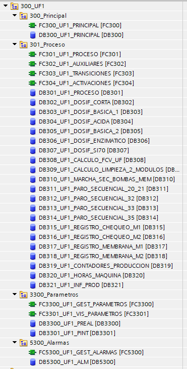
Constantes de proceso
Todos los procesos contaran con una tabla de variables para declarar constantes de usuario, para su uso en el programa.
El nombre seguirá las convenciones de codificación y nomenclatura.
Las constantes obligatorias serán las siguientes:

Se declararán también números máximos para los dispositivos temporizadores, flip flop y medias que se declaren en el DB principal del proceso.

Se declararán todas las etapas que contenga el proceso.

Principal
La función de este grupo es la de trabajar como interfaz entre el proceso y los datos de dispositivos, estados de seguridad y comunicaciones reales. Para ello, se creará el bloque de datos principal, el cual tendrá la siguiente organización:
- Variables OBLIGATORIAS.
- Al inicio del bloque de datos, deberá tener las siguientes variables booleanas.
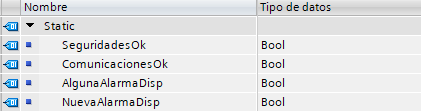
- SeguridadesOk
- Variable que indica que las seguridades están ok.
- ComunicacionesOk
- Variable que indica que las comunicaciones están ok.
- AlgunaAlarmaDisp
- Variable que indica que existe una alarma en algún dispositivo.
- NuevaAlarmaDispA
- Variable que indica que existe una nueva alarma en algún dispositivo.
- SeguridadesOk
- Variables de dispositivos.
- Se utilizarán UDT específicos para generar los dispositivos genéricos.
- Se organizarán de la siguiente forma:
- Motores
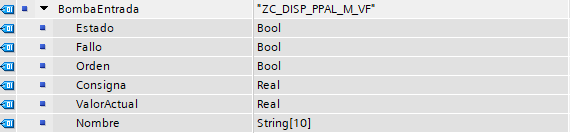
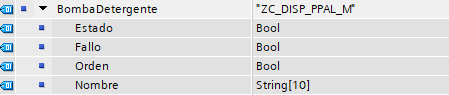
- Válvulas
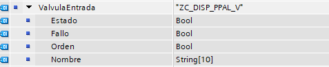
- Salidas analógicas
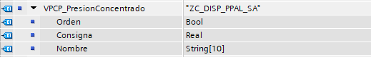
- Entradas analógicas
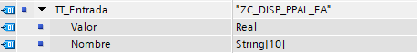
- Entradas digitales
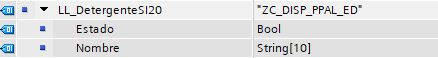
- Totalizadores
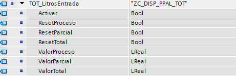
- PID
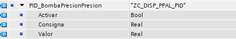
- Variables de temporizadores, flip flop medias, etc.
- Con el fin de encapsular y no depender de dispositivos externos, se crearán dispositivos internos para temporizadores, flip flop, medias, etc.
- Se declararán en forma de array de dispositivos.
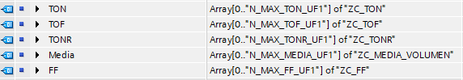
- Se utilizarán las constantes de usuario del proceso creadas para definir el tamaño del array.
La función tendrá declarados las siguientes variables temporales:
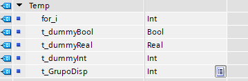
Los segmentos de la función principal siempre seguirán el siguiente orden:
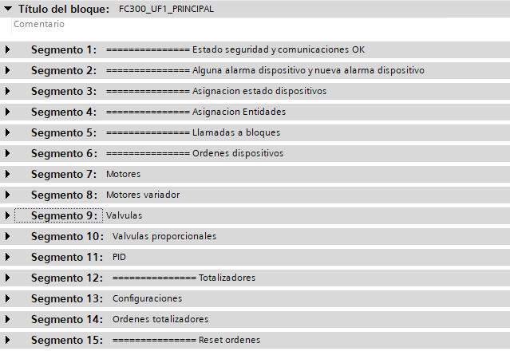
Estado seguridad y comunicaciones OK
Segmento encargado de escribir el estado de las seguridades y comunicaciones. El objetivo es agrupar estos estados en las variables del DB Principal para su uso en el proceso.
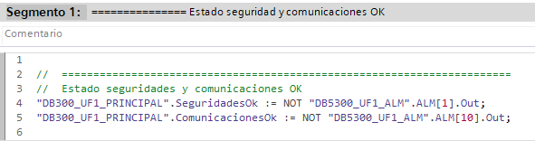
Alguna alarma dispositivo y nueva alarma dispositivo
Segmento encargado de escribir el estado de alguna alarma y nueva alarma de dispositivos. El objetivo es agrupar estos estados en las variables del DB Principal para su uso en el proceso.
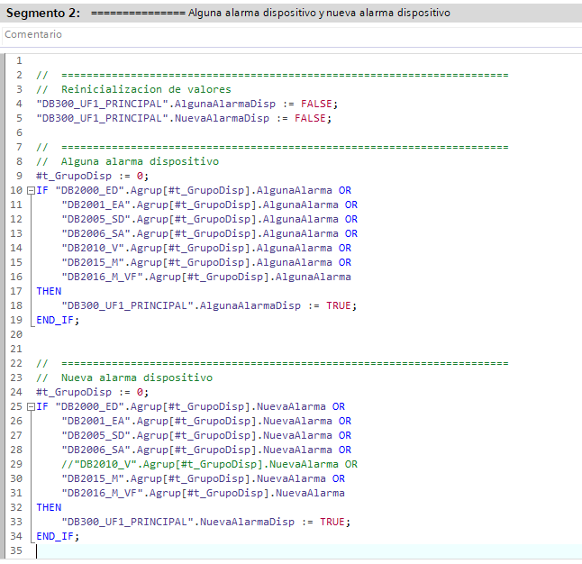
Asignación estado dispositivos
Segmento encargado de traspasar los valores de lectura de dispositivos reales a los dispositivos genéricos del proceso. El objetivo es utilizar estos dispositivos genéricos en el proceso en vez de los dispositivos reales, con el fin de encapsular los procesos.
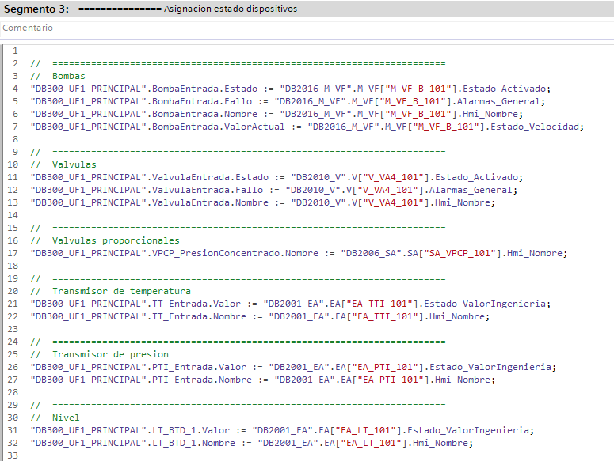
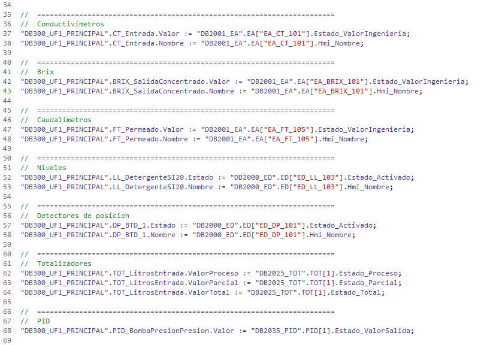
Asignación Entidades
Segmento encargado de configurar las entidades que utilizara el proceso.
Se dividen en dos tipos de entidades.
- Tipo FALSE:
- Entidad capturada desde el inicio del proceso, es el propio proceso el que se encarga de capturar y liberarlas.
- Tipo TRUE:
- Entidad dinámica, esta se captura a petición del usuario.
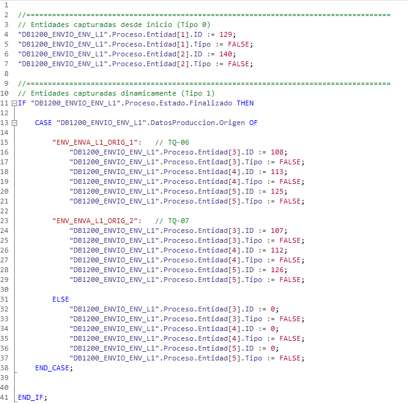
Llamadas a bloques
Segmento encargado de realizar las llamadas a los bloques de temporizadores, medias, flip flop, proceso, parámetros y alarmas.
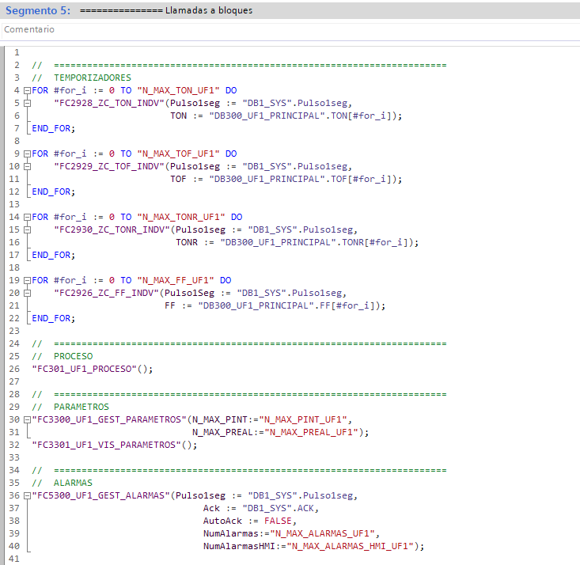
Órdenes a dispositivos
Las órdenes a los dispositivos se utilizarán siempre con SET a excepción de los totalizadores.
Segmento encargado de escribir las ordenes de los dispositivos genéricos a los dispositivos reales.
Se organizarán por segmentos según el tipo de dispositivo.
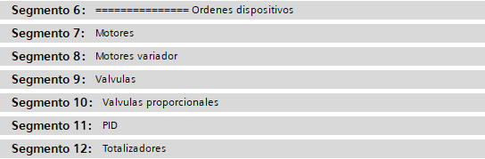
Motores
Segmento encargado de traspasar las ordenes de los dispositivos genéricos a los dispositivos reales.
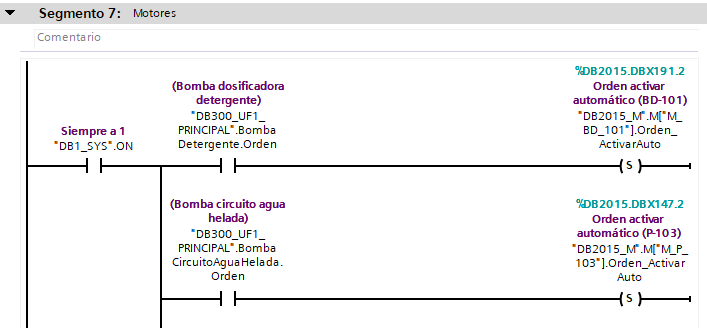
Motores variador
Segmento encargado de traspasar las ordenes de los dispositivos genéricos a los dispositivos reales.
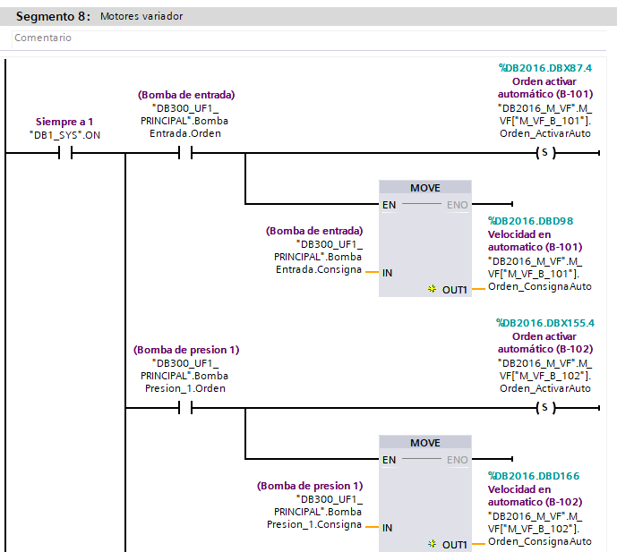
Válvulas
Segmento encargado de traspasar las ordenes de los dispositivos genéricos a los dispositivos reales.
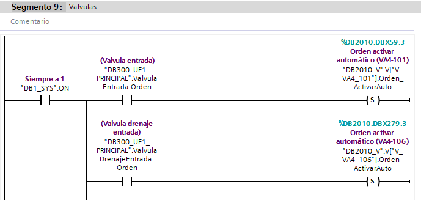
Salidas analógicas
Segmento encargado de traspasar las ordenes de los dispositivos genéricos a los dispositivos reales.
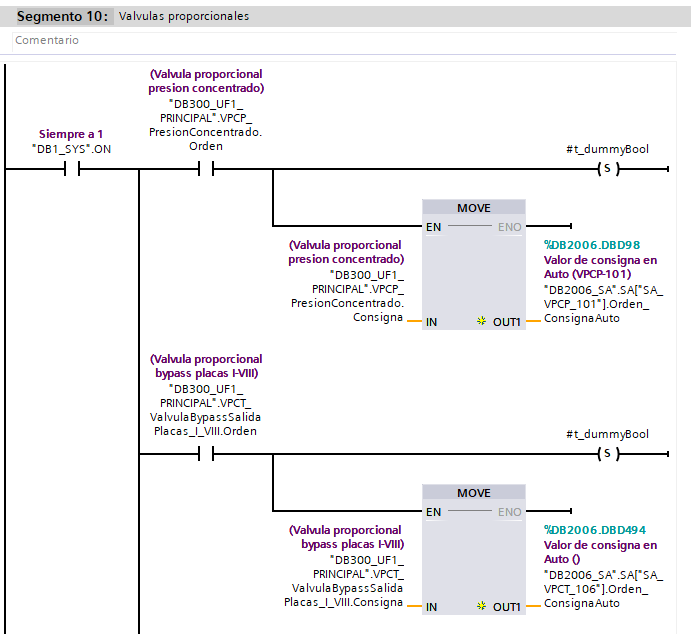
PID
Segmento encargado de traspasar las ordenes de los dispositivos genéricos a los dispositivos reales.
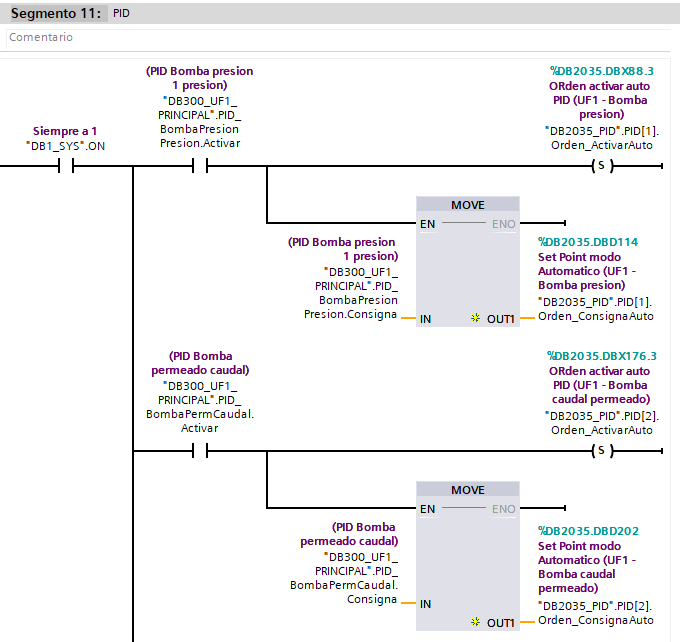
Totalizadores
Segmento encargado de traspasar las ordenes de los dispositivos genéricos a los dispositivos reales.
Se realizará mediante asignación directa la orden de activación.
Se realizará mediante SET la orden de reset.
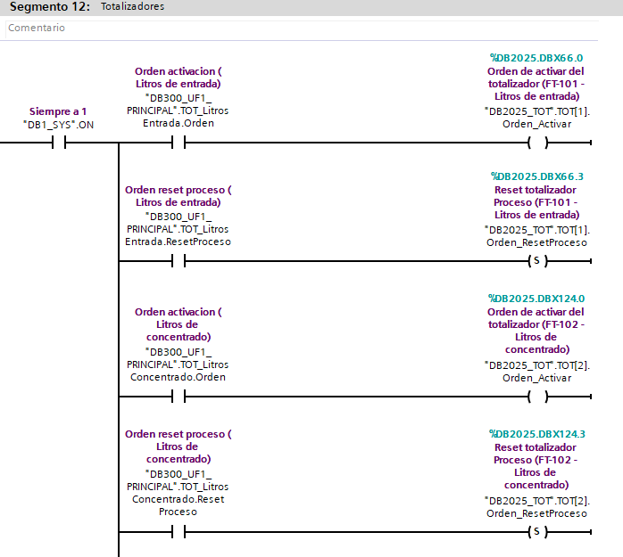
- Totalizadores
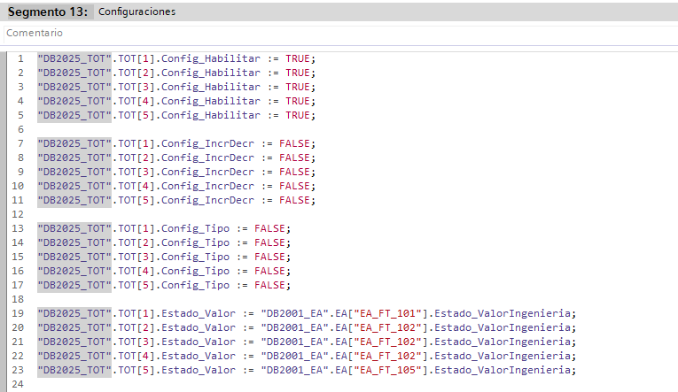
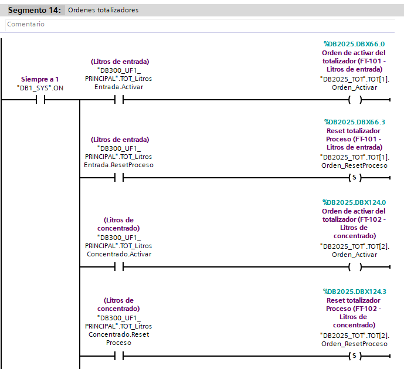
Reset ordenes
Segmento encargado de resetear todas las ordenes de los dispositivos genéricos para que se puedan volver a generar en el siguiente ciclo de scan.
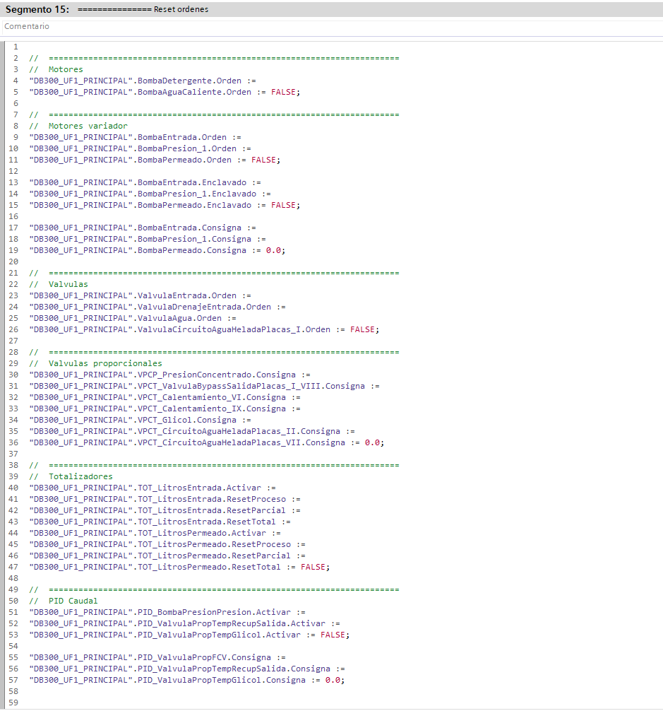
DB Proceso
Cada proceso tendrá su DB asociado, siguiendo las mismas reglas de numeración de bloques. Siempre deberá tener la siguiente estructura y en este orden. Estas categorías serán comunes para todos los procesos, y son OBLIGATORIAS para todos los procesos.
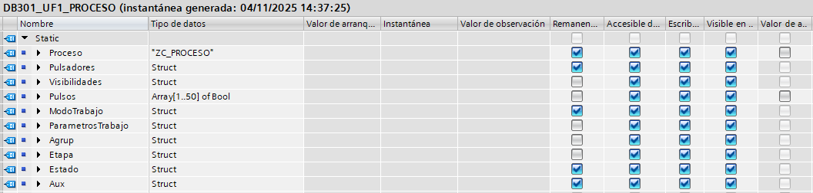
Proceso
UDT principal del proceso. Contiene la estructura de datos principal de los procesos
Pulsadores
STRUCT. Contendrá pulsadores extra para el proceso. Utilizaran UDT ZC_PULSADOR.
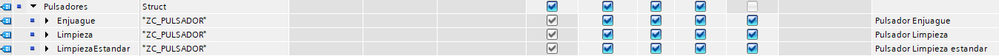
En caso de no utilizar pulsadores extra, se deja declarado un pulsador de reserva.
Visibilidades
STRUCT. Contendrá variables auxiliares para su uso como visibilidades.
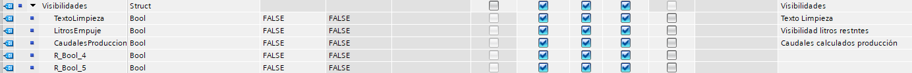
En caso de no utilizar visibilidades, dejar variables de reserva.
Pulsos
ARRAY [1..XX] OF BOOL. Array de booleanos para su uso como pulsos.
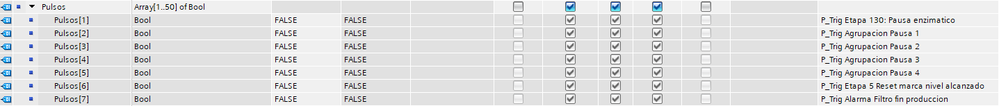
Ajustar en función del proceso.
Modo trabajo
STRUCT. Contendrá variables que indican el modo de trabajo de la maquina/proceso.
Se utilizarán variables tipo INT para su gestión bien mediante pulsadores o bien mediante asignación directa en HMI.
Se utilizarán variables tipo BOOL para su uso en el programa. De esta forma las referencias cruzadas serán más sencillas.
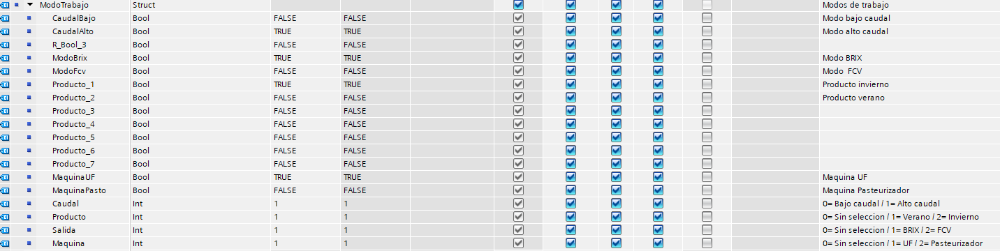
En caso de no utilizar modos de trabajo, dejar un booleano y un entero de reserva.
Parámetros de trabajo
STRUCT. Contendrá variables que indicaran parámetros de funcionamiento del proceso (temperaturas, valores fijos, conductividades, tiempos, etc.)
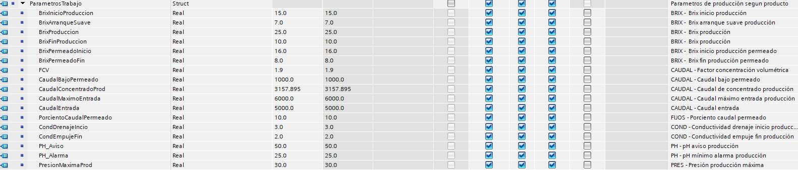
En caso de no utilizar parámetros de trabajo, dejar de reserva.
Agrupaciones
STRUCT. Contendrá variables que indican agrupaciones de etapas, modos, etc. Se utilizan para simplificar la lógica del proceso.
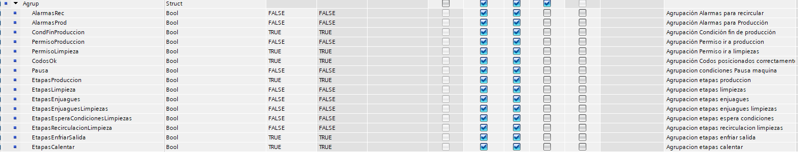
En caso de no utilizar agrupaciones, dejar de reserva.
Etapa
STRUCT. Contendrá variables que indican la etapa actual en la que se encuentra el proceso.

Siempre deberá de tener todas las etapas del proceso.
Estado
STRUCT. Contendrá variables que indican el estado del proceso/maquina. No confundir con el estado del proceso, esta estructura se utilizará para indicar otros estados (planta limpia, tiempos calculados, etc.)
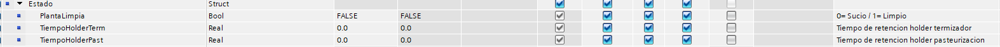
En caso de no utilizar estados, dejar de reserva.
Auxiliares
STRUCT. Contendrá variables auxiliares para cálculos, marcas internas, variables que solo se utilizaran en el proceso.
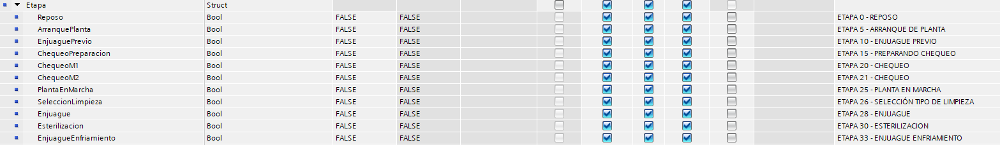
En caso de no utilizar estados, dejar de reserva.
Extras
A continuación de estas estructuras obligatorias, se ira añadiendo las estructuras particulares de cada proceso. Se intentará mantener la misma organización y normas descritas en este manual.
Proceso
La lógica de los procesos siempre seguirá este orden de segmentos:
- Enclavamientos proceso
- Alarmas proceso
- Avisos
- Permisos
- Permisos pulsadores extra
- Ordenes
- Agrupaciones
- Modos de trabajo
- Litros etapa
- Entidades
- Configuración Proceso
- Llamada a FC Proceso
- Llamada a FC Auxiliares
- Llamada a FC Transiciones
- Llamada a FC Activaciones
Variables temporales
El FC de proceso tiene las siguientes variables temporales.
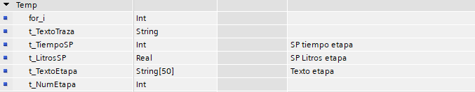
Enclavamientos proceso
Grupo de segmentos encargado de gestionar los enclavamientos del proceso. El enclavamiento del proceso impide que este se pueda iniciar.
Se disponen de 8 enclavamientos para poder diferenciarlos.
Hoy en día no se usa.
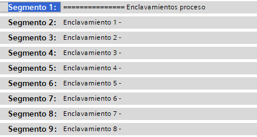
El modo de uso es mediante una asignación directa a la variable de los enclavamientos.
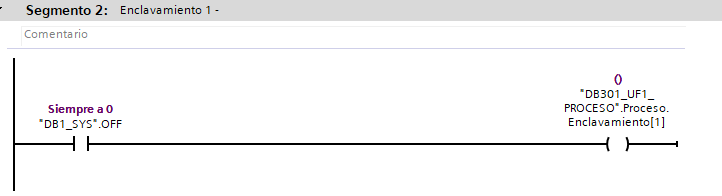
Alarmas de proceso
Grupo de segmentos encargados de gestionar las alarmas del proceso. La alarma o error del proceso, hace que este se pause.
Se disponen de 8 alarmas de proceso para su libre programación.
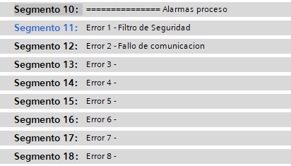
En el segmento principal, se realiza un reset de las alarmas, para que estas se puedan volver a generar.
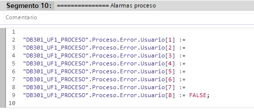
El modo de uso es mediante SET, escribiendo el valor de la alarma y también el texto de error.
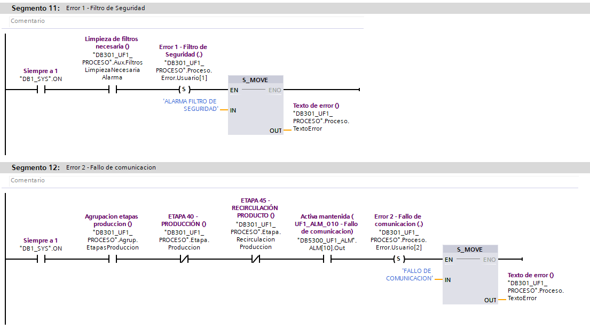
Avisos
Grupo de segmentos encargados de gestionar los avisos del proceso. El aviso NO realiza ninguna acción al proceso.
Se disponen de 8 avisos de proceso para su libre programación.
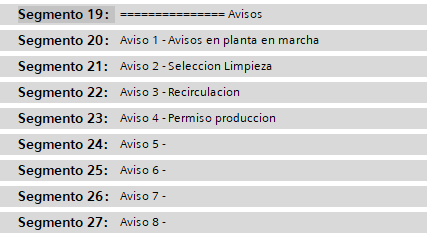
En el segmento principal, se realiza un reset de los avisos, para que estas se puedan volver a generar.
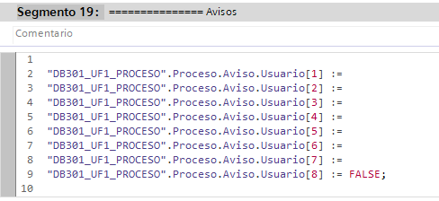
El modo de uso es mediante SET, escribiendo el valor del aviso y también el texto de aviso.
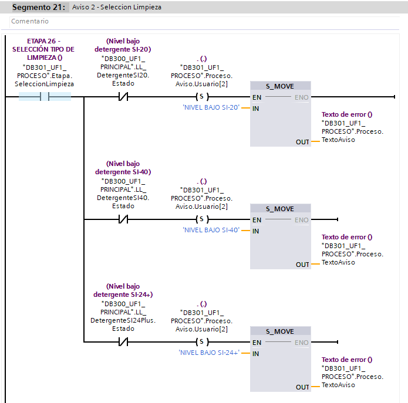
Permisos
Grupo de segmentos encargados de gestionar los permisos del proceso. Estos permisos son los propios del proceso.
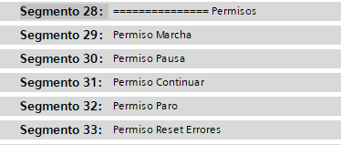
El modo de uso es mediante asignación directa.
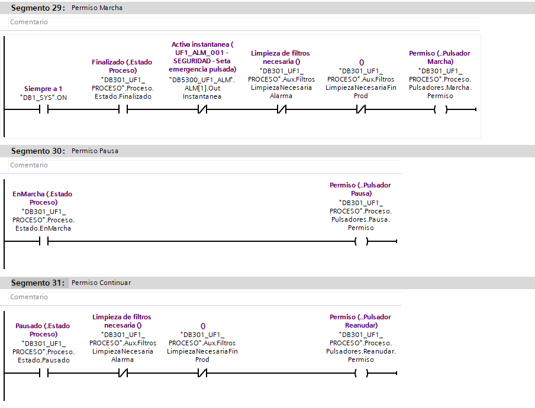
Permisos pulsadores extra
Grupo de segmentos encargados de gestionar los permisos y gestión de los pulsadores extras.
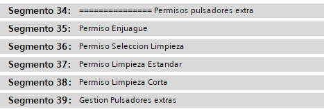
En cada segmento, se gestionará el permiso de cada pulsador, del mismo modo que los permisos descritos en el punto anterior.
En caso de no tener, se dejará un segmento vacío como el siguiente.
Al final de este grupo de segmentos, en el segmento “Gestión pulsadores extras”, se realizará la llamada a la función pulsador para que se gestionen.
En caso de no utilizar, se dejara el segmento vacio.
Ordenes
Grupo de segmentos encargados de gestionar las órdenes del proceso. Estas órdenes se utilizarán en caso de tener que gestionar el proceso directamente desde el PLC.
La orden de reset errores, siempre deberá tener por lo menos la marca de acuse del DB de sistema.
Agrupaciones
Grupo de segmentos encargados de gestionar las marcas de agrupaciones.
En caso de no utilizar, se dejará un segmento vacío como el siguiente.

Modos de trabajo
Grupo de segmentos encargados de gestionar las marcas de modos de trabajo.
Los modos de trabajo se intentará siempre gestionarlos mediante pulsadores.
En el primer segmento, se realizará la gestión de la marca INT del modo de trabajo.
En el siguiente segmento en SCL, se realizará la conversión de INT a las variables BOOL, las cuales serán las que se utilicen en el proceso.
En caso de no utilizar, se dejará un segmento vacío como el siguiente.

Litros etapa
Grupo de segmentos encargados de gestionar los litros de etapa el proceso.
Siguiendo la misma filosofía de encapsulamiento, en los procesos que se necesite contar totalizadores para gestionar los cambios de etapa, utilizaran las variables de “litros etapa” que se encuentran dentro del UDT del proceso.
En el primer segmento se gestionará la visibilidad de los litros de etapa, que se mostraran en HMI/SCADA. Se utilizará mediante asignación directa.
En el siguiente segmento, se gestionará la transferencia de datos del totalizador actual a la variable del proceso.
Entidades
Grupo de segmentos encargados de gestionar las capturas y liberaciones de entidades dinámicas del proceso.
Se dividen en dos subgrupos de segmentos, uno para ordenes de capturar y otro para ordenes de liberar.
Capturar
Segmentos encargados de gestionar las órdenes de captura de entidades a petición del usuario.
Siempre se utilizará mediante un SET.
Se activará la orden de capturar de la entidad deseada dentro del proceso.
Liberar
Segmentos encargados de gestionar las órdenes de liberación de entidades a petición del usuario.
Siempre se utilizará mediante un SET.
Se activará la orden de liberar de la entidad deseada dentro del proceso.
Configuración proceso
Grupo de segmentos encargados de gestionar la configuración del proceso.
En el primer segmento, se asignará el tipo de proceso.
En el siguiente segmento, se realizará la activación de las marcas de etapa.
Se escribirán mediante asignación directa.
En el siguiente segmento, se realizará la configuración de la secuencia. Este se encargará de:
- Reinicializar la marca Proceso.VentanaAviso.Mostrar
- Definir el nombre del proceso
- Definir el ID
- Definir el tiempo etapa
- Definir los litros de etapa
En caso de querer utilizar la ventana de aviso del proceso, esta se definirá en la configuración de la secuencia.
En el siguiente segmento, se realizará la configuración del texto de cada etapa. Este se encargará de gestionar tanto el texto de la etapa actual como el del cambio de etapa.
En el siguiente segmento, se realizará la configuración de los bits de marcha del proceso. Los procesos cuentan con hasta 8 bit de marcha retardados, que se utilizaran para activaciones de dispositivos.
Llamada a FC Proceso
Segmento encargado de realizar la llamada a la función de gestor de proceso.
Llamada a FC Auxiliares
Segmento encargado de realizar la llamada a la función de auxiliares.
Llamada a FC Transiciones
Segmento encargado de realizar la llamada a la función de transiciones.
Llamada a FC Activaciones
Segmento encargado de realizar la llamada a la función de activaciones.
Auxiliares
Este bloque es el encargado de gestionar todas las marcas, cálculos, informes, registros, etc. Auxiliares que no estén contempladas en el resto de la organización de los procesos.
Se seguirá manteniendo las mismas reglas de organización.
Transiciones
Este bloque es el encargado de gestionar todas las transiciones entre las etapas de la secuencia del proceso.
Siempre se utilizarán las constantes de usuario creadas para este proceso para su uso en la etapa actual y en la etapa siguiente.
El primer segmento de este bloque SIEMPRE tiene que estar, este es el encargado de gestionar el arranque del proceso. Cada vez que un proceso se arranca, pasa de la etapa 0 a la etapa 1, y ya a partir de aquí pasa a la etapa que se configure en este segmento. Las marcas de ErroresComprobados y de EntidadesCargadas SIEMPRE tienen que estar.
Por norma general, siempre se intentará mantener el mismo número de segmentos por cada etapa, y su orden.
Gestión tiempo de etapa
Segmento encargado de activar/desactivar el tiempo de etapa.
La activación del tiempo de etapa, siempre se gestionará con un SET.
La activación del reset de tiempo de etapa, siempre se gestionará con un SET.
En caso de no utilizar, dejar la orden activar a RESET o el segmento vacío.
Gestión litros etapa
Segmento encargado de activar/desactivar los litros de etapa.
La activación de los litros de etapa, siempre se gestionará con un SET.
En caso de no utilizar, dejar la orden activar a RESET o el segmento vacío.
Gestión salto de etapa
Segmento encargado de gestionar los saltos de etapa.
Siempre se utiliza la variable EtapaSiguiente para el salto de etapa.
Siempre se utilizarán las constantes de proceso para las etapas.
Se puede utilizar las variables de LitrosEtapa.Cumplido o TiempoEtapa.Cumplido del proceso.
Se puede utilizar cualquier condición de salto de etapa.
Finalización del proceso
Para finalizar el proceso, siempre hay que utilizar la constante de sistema de FIN_PROCESO.
Activaciones
Este bloque es el encargado de gestionar todas las activaciones de los dispositivos que utiliza el proceso.
Siempre se agruparán por tipo de dispositivo. Siempre deberán tener los siguientes segmentos, con el siguiente orden:
- Motor Variador
- Segmento con titulo
- Gestión seguridad dispositivo
- Gestión activación dispositivo
- Motor
- Segmento con titulo
- Gestión seguridad dispositivo
- Gestión activación dispositivo
- Válvula
- Segmento con titulo
- Gestión seguridad dispositivo
- Gestión activación dispositivo
- Salida analógica
- Segmento con titulo
- Gestión seguridad dispositivo
- Gestión activación dispositivo
- Totalizadores
- Segmento con titulo
- Gestión reset dispositivo
- Gestión activación dispositivo
- Medias
- Segmento con titulo
- Gestión activación dispositivo
- Otros
- Segmento con titulo
- Otros
Motor variador
Grupo de segmentos encargados de gestionar las ordenes de los motores con variador.
El segmento inicial estará vacío, solo contendrá el título.
Los siguientes segmentos, se agruparán por dispositivo, conteniendo como mínimo un segmento para la gestión de enclavamiento y otro para la gestión de la activación.

En caso de tener que realizar alguna otra gestión, siempre estará antes que estos dos segmentos.

Seguridad
Segmento encargado de gestionar la seguridad de activación del dispositivo.
Se utilizará la marca SegActivacion de cada uno de ellos.
Se utilizará siempre con una asignación directa.

Activación
Segmento encargado de gestionar la activación del dispositivo.
SIEMPRE debe tener la marca de SegActivacion que se gestiona en el segmento anterior.
Se utilizará siempre con un SET.

En el caso de tener que asignar una consigna en cada etapa, por facilidad se utilizará un segmento en SCL, el cual contendrá un CASE según la etapa actual.
Motor
Grupo de segmentos encargados de gestionar las ordenes de los motores.
El segmento inicial estará vacío, solo contendrá el título.
Los siguientes segmentos, se agruparán por dispositivo, conteniendo como mínimo un segmento para la gestión de enclavamiento y otro para la gestión de la activación.
En caso de tener que realizar alguna otra gestión, siempre estará antes que estos dos segmentos.
Seguridad
Segmento encargado de gestionar la seguridad de activación del dispositivo.
Se utilizará la marca SegActivacion de cada uno de ellos.
Se utilizará siempre con una asignación directa.
Activación
Segmento encargado de gestionar la activación del dispositivo.
SIEMPRE debe tener la marca de SegActivacion que se gestiona en el segmento anterior.
Se utilizará siempre con un SET.
Válvula
Grupo de segmentos encargados de gestionar las ordenes de las válvulas.
El segmento inicial estará vacío, solo contendrá el título.
Los siguientes segmentos, se agruparán por dispositivo, conteniendo como mínimo un segmento para la gestión de enclavamiento y otro para la gestión de la activación.
En caso de tener que realizar alguna otra gestión, siempre estará antes que estos dos segmentos.
Seguridad
Segmento encargado de gestionar la seguridad de activación del dispositivo.
Se utilizará la marca SegActivacion de cada uno de ellos.
Se utilizará siempre con una asignación directa.
Activación
Segmento encargado de gestionar la activación del dispositivo.
SIEMPRE debe tener la marca de SegActivacion que se gestiona en el segmento anterior.
Se utilizará siempre con un SET.
Salida analógica
Grupo de segmentos encargados de gestionar las ordenes de las salidas analogicas.
El segmento inicial estará vacío, solo contendrá el título.
Los siguientes segmentos, se agruparán por dispositivo, conteniendo como mínimo un segmento para la gestión de enclavamiento y otro para la gestión de la activación.
En caso de tener que realizar alguna otra gestión, siempre estará antes que estos dos segmentos.
Seguridad
Segmento encargado de gestionar la seguridad de activación del dispositivo.
Se utilizará la marca SegActivacion de cada uno de ellos.
Se utilizará siempre con una asignación directa.
Activación
Segmento encargado de gestionar la activación del dispositivo.
SIEMPRE debe tener la marca de SegActivacion que se gestiona en el segmento anterior.
Se utilizará siempre con un SET.
En el caso de tener que asignar una consigna en cada etapa, por facilidad se utilizará un segmento en SCL, el cual contendrá un CASE según la etapa actual.
Totalizadores
Grupo de segmentos encargados de gestionar las ordenes de los totalizadores.
El segmento inicial estará vacío, solo contendrá el título.
Los siguientes segmentos, se agruparán por dispositivo, conteniendo como mínimo un segmento para la gestión del reset y otro para la gestión de la activación.
Reset
Segmento encargado de gestionar la orden de reset del dispositivo.
Se utilizará siempre con una SET.
Activación
Segmento encargado de gestionar la activación del dispositivo.
Se utilizará siempre con una SET.
Medias
Grupo de segmentos encargados de gestionar las medias.
El segmento inicial estará vacío, solo contendrá el título.
Los siguientes segmentos, se utilizará un segmento por dispositivo. En él, se realizará la gestión y la llamada al bloque de medias.
Otros
Grupo de segmentos encargados de gestionar el resto de los equipos no contemplados en los puntos anteriores.
Se mantendrá la misma lógica que los puntos anteriores.
Parámetros
Con el fin de encapsular el proceso, se creará un DB de parámetros específicos para cada proceso.
Para la gestión de parámetros del proceso, serán necesarios dos bloques para gestionar la trazabilidad de los cambios de parámetros, así como la visibilidad de estos para su uso en HMI/SCADA.
Gestión de parámetros
Este bloque es el encargado de gestionar la trazabilidad de cambios de parámetros, tanto reales como enteros.
El bloque cuenta con esta interfaz.
Se realizan dos bucles FOR para gestionar los parámetros enteros y reales, y realizar la gestión de trazabilidad de los cambios de parámetros.
Visibilidad de parámetros
Este bloque es el encargado de gestionar la visibilidad de los parámetros que se mostraran en HMISCADA.
Para facilidad de comprensión, se agruparán por dispositivo asociado al parámetro.
Se utilizará mediante asignación directa.
Alarmas
Con el fin de encapsular el proceso, se creará un DB de alarmas específicas para cada proceso.
Para la gestión de las alarmas del proceso (no confundir con los errores del proceso), será necesario un bloque para gestionar las alarmas.
Se creará un segmento por cada alarma.
Las alarmas siempre seguirán el mismo formato de utilización.